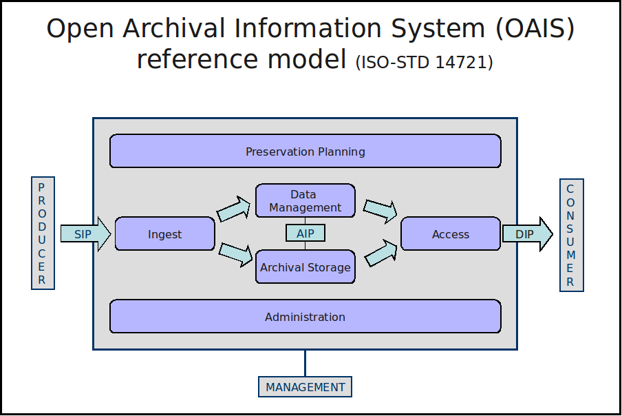

Archivematicaとは？¶
Archivematicaは、デジタルオブジェクトのコレクションへの標準ベースの長期的なアクセスを維持するために設計されたフリーでオープンソースのデジタル保存システムです。Archivematicaは、Webベースのコンテンツ管理システムAtoMとパッケージ化されており、デジタルオブジェクトにアクセスできます。
オープンソースOAIS¶
{kind=link}

Archivematicaは、フリーでオープンソースの統合ツールスイートを提供し、 Open Archival Information System （OAIS） 機能モデルやその他のデジタル保存の標準やベストプラクティスに準拠した、デジタルオブジェクトのインジェストからアーカイブ保存、アクセスまでの処理を可能にします。
Archivematicaのコードは、すべて GNU Affero General Public License の下でリリースされており、Archivematicaの文書は、 Creative Commons Attribution-ShareAlike 4.0 International License の下でリリースされています。
ベストプラクティスのデジタル保存への障壁を下げる¶
Archivematicaプロジェクトの目標は、技術的・経済的に余裕のないアーキビストや図書館員に、今日からデジタル情報の保存を始めるためのツール、方法論、自信を提供することです。プロジェクトでは、徹底的なOAISのユースケースとプロセス分析を行い、インジェストからアクセスまでOAISの機能モデルに準拠するために実施しなければならない具体的なステップをまとめました。展開の経験やユーザーからのフィードバックを通じて、プロジェクトでは、OAISの枠を超え、転送されたデジタルオブジェクトの分析とSIPへの配列に取り組み、複数の意思決定ポイントでのアーカイブ鑑定が可能になりました。可能な限り、これらの要件は、Archivematicaシステム内のソフトウェアツールに割り当てられています。現在のシステムでこれらのステップを自動化できない場合は、エンドユーザーが実行するマニュアル手順に組み込み、文書化します。これにより、1.0以前の初期のシステムリリースにおいても、保存要件全体が確実に実行されます。要するに、システムは、単なるソフトウェア・ツールのセットではなく、技術、人材、手順の統合された全体として概念化されています。Archivematicaのインストールやカスタマイズの技術的なサポートを希望する機関には、Artefactual Systems社がオプションで技術サポートサービスを提供しています。
ソフトウェア、ドキュメンテーション、開発インフラストラクチャはすべて無料で利用でき、AGPLおよびクリエイティブ・コモンズ・ライセンスの下でリリースされています。Archivematicaプロジェクトは、このような自由を制限するプロプライエタリなソフトウェアライセンスに貴重な資金を費やすのではなく、デジタル保存の課題に取り組むメモリー機関が、Archivematicaのようなプロジェクトに資金と技術リソースをプールし、同僚やユーザー、専門家コミュニティ全体の利益のために長期的な投資を最大限に活用することを奨励しています。